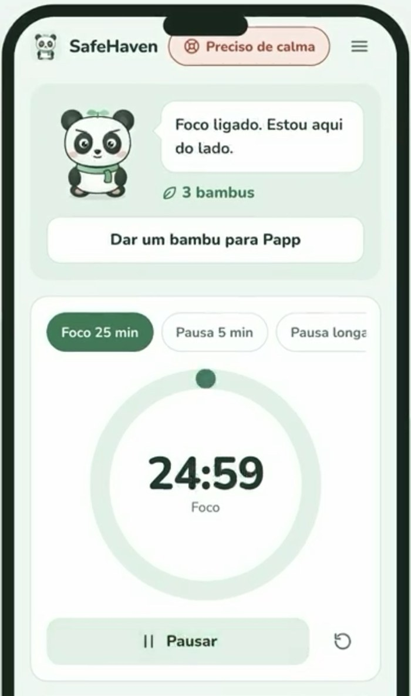
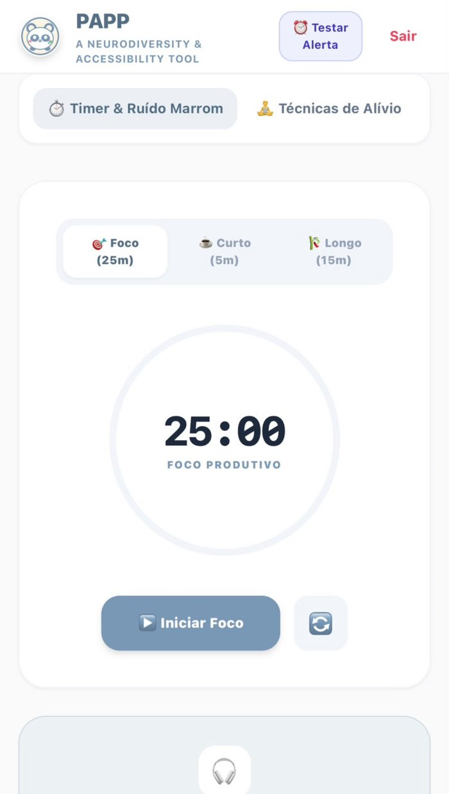

SafeHaven: foco e calma para quem estuda de um jeito diferente
Aplicativo móvel de apoio ao foco e à organização da rotina de estudos de estudantes neurodivergentes. Une regulação temporal (Pomodoro e lembretes), regulação sensorial (máscara sonora e respiração) e o mascote Papp, com acompanhamento psicológico opcional. Aqui justificamos cada decisão de interface, do problema à validação com usuários.
| Tempo | Quem fala | Bloco | Mensagem principal |
|---|---|---|---|
| 0–2 min | nome | Problema e persona | Manter a atenção é difícil; o SafeHaven regula o tempo e o ambiente. |
| 2–5 min | nome | 1. Fator humano | Modelos mentais reaproveitados e decisões que tiram peso da memória. |
| 5–7 min | nome | 2. Acessibilidade | Contraste medido, letras maiores, tema escuro e leitor de tela. |
| 7–11 min | nome | 3. Processo | Jornada, storyboard do Pomodoro, evolução PAPP → SafeHaven e Norman. |
| 11–14 min | nome | 4. Avaliação | Problemas do beta test, heurística violada, correção e métricas. |
| 14–15 min | nome | Conclusão | Rastreabilidade: dor → decisão → evidência. |
Fundamentos e fator humano
O problema
Sustentar a atenção em ambientes digitais é difícil para qualquer estudante, e mais ainda para quem é neurodivergente (TDAH, TEA, dislexia). O ruído do ambiente distrai, o tempo “some”, as tarefas são esquecidas e, nos momentos de ansiedade, não há uma ferramenta à mão para se acalmar. Os apps de produtividade comuns costumam piorar o quadro: muitas opções, notificações agressivas e visual carregado.
Proposta de valor: um único app, calmo e previsível, que ajuda o estudante a regular o tempo (Pomodoro e lembretes) e o ambiente sensorial (máscara sonora e respiração), guiado pelo panda Papp e, quando houver, ligado à sua psicóloga.
Inclua as citações autor-data pedidas no feedback da metodologia: Pomodoro (CIRILLO, 2018), ruído marrom e concentração, tecnologias assistivas. Use as mesmas fontes do documento de metodologia.
Perfis de usuário
Cadastro simples. Usa Foco, Alívio e Tarefas.
Entra com a chave SH-XXXX-XXXX recebida (no cadastro ou depois, na aba Terapia) e ganha a conversa ao vivo e as receitas e orientações.
Cadastro com CRP, aprovado pelo admin. Gera chaves, conversa com pacientes e envia orientações.
Aprova CRPs e modera contas. Por sigilo, não vê conversas, diários nem receitas.
Modelos mentais e paradigmas de interação
Cada função foi apoiada em algo que o estudante já sabe usar, para aproximar o modelo mental do usuário do modelo conceitual do sistema:
| Funcionalidade | Modelo mental de origem | Decisão de interface |
|---|---|---|
| Pomodoro | Timer de cozinha / cronômetro do celular | Anel que esvazia como um relógio, tempo grande no centro, botão Iniciar/Pausar no mesmo lugar. |
| Tarefas | Lista de afazeres e alarme | Campo “O que você precisa fazer?”, categoria e horário opcional; marcar como feita com um toque. |
| Panda e bambus | Bichinho virtual (estilo Tamagotchi) | Cada ciclo de foco rende um bambu; alimentar o Papp vira uma pausa guiada de respiração. |
| Descarrego mental | Escrever num papel e queimar | Duas saídas claras: “Queimar e soltar” (apaga) ou “Salvar no diário”. |
| Conversa com a psicóloga | Balões de “eu” e “ela”, campo fixo embaixo, indicador de online. | |
| Chave de acesso | Código de convite | Formato SH-XXXX-XXXX mostrado no próprio campo. |
Paradigmas de interação: manipulação direta (tocar no chip do modo, arrastar o volume, marcar tarefa), navegação por menu fixo com 5 abas sempre visíveis, interação guiada pelo mascote (o Papp fala o que acontece) e conversação no chat com a profissional.
Decisões para reduzir a carga cognitiva
Poucas áreas, sempre visíveis
Barra inferior com 5 abas (Foco, Alívio, Tarefas, Papp, Terapia), com ícone e texto: reconhecer em vez de lembrar (Nielsen, H6).
Atalho “Preciso de calma”
Botão fixo no topo de todas as telas. Na crise, ninguém precisa procurar: respiração, aterramento 5-4-3-2-1, psicóloga e CVV 188 a um toque.
Menos passos
Quando o lembrete da tarefa toca, o app oferece “Iniciar Pomodoro” já com a tarefa carregada. Cada tarefa também tem seu próprio botão de Pomodoro.
Uma ação principal por cartão
Iniciar/Pausar é o único botão de destaque do cronômetro; reiniciar é um ícone secundário (Lei de Hick).
Ambiente sensorial calmo
Verde claro, sino suave único (não alarme contínuo), sons gerados no aparelho, respeito ao “reduzir movimento” do sistema.
O app lembra por você
Sessão salva (abre direto), último som escolhido e preferência “tocar som com o Pomodoro” ficam guardados.
Pausa saudável
A cada hora de uso, o app pergunta como a pessoa está e sugere água ou respiração.
Status sempre visível
Quando o servidor gratuito está “dormindo”, aparece “Acordando o servidor…” em vez de o app parecer travado (H1).
Acessibilidade e inclusão
Seguimos a WCAG 2.2, nível AA, organizada nos quatro princípios: perceptível, operável, compreensível e robusto.
| Princípio | Critério | Como está no app |
|---|---|---|
| Perceptível | 1.4.3 Contraste mínimo (4,5:1) | Pares de cor medidos na tabela abaixo; um par ficou no limite e foi corrigido. |
| Perceptível | 1.1.1 Conteúdo não textual | O mascote tem role="img" e nome; ícones decorativos têm aria-hidden="true". |
| Perceptível | 1.4.4 Redimensionar texto | Opção “Letras maiores” (+12,5%) e unidades rem; layout testado de 320 px ao desktop. |
| Perceptível | 1.4.1 Uso de cor | A aba ativa muda de cor e ganha fundo; o modo do timer aparece escrito. |
| Operável | 2.5.8 Tamanho do alvo (mín. 24 px) | Botões com 48 px de altura, botões de ícone 44×44 px, chips 40 px. |
| Operável | 2.3.3 Animação por interação | Animações desligadas quando o sistema pede “reduzir movimento”. |
| Compreensível | 3.3.1 / 3.3.2 Erros e rótulos | Campos com rótulo visível (“E-mail”, “Senha”); erro em texto com role="alert". |
| Robusto | 4.1.2 Nome, função, valor | aria-label em botões só com ícone, role="switch" com aria-checked, aria-current na aba ativa. |
| Robusto | 4.1.3 Mensagens de status | Avisos e fala do Papp em aria-live="polite": o leitor de tela anuncia sem tirar o foco. |
Contraste de cores
Valores medidos com a fórmula de luminância da WCAG sobre as cores reais do app (variáveis de styles.css). O medidor abaixo funciona ao vivo na apresentação.
| Uso | Texto | Fundo | Razão | AA texto normal |
|---|---|---|---|---|
| Texto principal | #173A2A | #EEF7F1 | 11,47:1 | Passa |
| Texto secundário | #4F7060 | #EEF7F1 | 5,03:1 | Passa |
| Texto secundário em cartão | #4F7060 | #FFFFFF | 5,50:1 | Passa |
| Botão principal | #FFFFFF | #2C7A55 | 5,22:1 | Passa |
| Botão “Preciso de calma” | #B8442F | #FBE7E1 | 4,51:1 | Passa (no limite) |
| Etiquetas verdes | #2C7A55 | #E0F2E7 | 4,48:1 | Não passa → corrigido para #236446 (6,04:1) |
| Tema escuro: texto | #E2F2E8 | #0E1A14 | 15,38:1 | Passa |
| Tema escuro: botão | #0B1F15 | #5CC08C | 7,68:1 | Passa |
Medidor de contraste (fórmula da WCAG)
—
Legibilidade tipográfica
- Nunito: sem serifa, arredondada e com formas abertas, menos “agressiva” visualmente e fácil de ler em telas pequenas.
- Corpo de texto em 16 px com peso 500 e entrelinha 1,5; títulos em peso 800 para hierarquia clara.
- Texto alinhado à esquerda, sem blocos em maiúsculas; o tempo do Pomodoro em tamanho grande no centro do anel.
- Ajustes do usuário: “Letras maiores” e “Tema escuro” no menu Conta e ajustes.
Suporte estrutural no código
Trechos reais do repositório (React):
// Cronômetro: o leitor de tela fala o modo e o tempo restante
<div className="dial" role="timer" aria-label={`${MODES[t.mode].label}: ${fmt(t.remaining)} restantes`}>
// Botão só com ícone ganha nome
<button className="icon-btn" onClick={() => timer.reset()} aria-label="Reiniciar o cronômetro">
// A fala do Papp é anunciada sem roubar o foco
<p className="speech" aria-live="polite">{mascot.text}</p>
// Aba atual identificada para o TalkBack
<button aria-current={tab === t.id ? 'page' : undefined}>
// Janelas (respiração, ajustes) são diálogos de verdade
<div className="sheet" role="dialog" aria-modal="true" aria-label={title}>
// Interruptor acessível
<button role="switch" aria-checked={checked} aria-label={label} />Se der, grave 15 segundos do TalkBack lendo a tela de Foco e coloque o vídeo aqui.
Processo de design e construção
Pesquisa: persona
Proto-persona montada a partir do público-alvo e do beta test. Ajustem com dados de entrevista ou questionário e digam quantas pessoas participaram.
Lívia Martins, 20 anos
Estudante do 2º semestre de Análise e Desenvolvimento de Sistemas, com TDAH. Mora em república, estuda à noite e faz acompanhamento com uma psicóloga.
Objetivos
- Conseguir estudar 1 hora sem se perder no celular.
- Não esquecer entregas e horários.
- Ter algo rápido para se acalmar antes de prova.
Dores
- Barulho da casa tira a concentração.
- Alarmes altos e apps cheios a deixam mais agitada.
- Na ansiedade, não lembra das técnicas que a psicóloga ensinou.
Comportamento digital
- Usa o celular o dia todo; desliga notificações que acha excessivas.
- Já tentou apps de Pomodoro, mas abandonou.
- Gosta de recompensas visuais e personagens.
“Eu só queria um lugar simples, onde eu não precise lembrar de tudo sozinha.”
Jornada do usuário
| Etapa | Ação | Pensamento / sentimento | Como o SafeHaven responde |
|---|---|---|---|
| Planejar | Anota “Revisar Cálculo, 20h”. | “Se eu não anotar, esqueço.” | Tarefa com horário e categoria em um único formulário. |
| Começar | Às 20h o celular toca. | Resistência para começar. | Sino suave e banner “Iniciar Pomodoro” com a tarefa carregada. |
| Focar | Estuda 25 min com ruído marrom. | Incomodada com o barulho da casa. | Máscara sonora junto com o timer; Papp em modo “foco”. |
| Pausar | Ciclo termina. | Orgulho, cansaço. | “Ciclo concluído! Ganhei um bambu.” Pausa curta sugerida. |
| Crise | Lembra da prova e fica ansiosa. | Coração acelerado, mente em branco. | “Preciso de calma” no topo: respiração guiada em 1 toque. |
| Desabafar | Quer contar para a psicóloga. | “Não quero esperar até a sessão.” | Conversa ao vivo na aba Terapia. |
Tarefa crítica: cenário de uso e storyboard
Cenário: são 20h e a Lívia marcou uma tarefa para esse horário. Ela precisa começar a estudar sem se distrair, mesmo com barulho na casa.
- O lembrete toca um sino único. No topo aparece “Revisar Cálculo — Chegou a hora que você marcou” com o botão “Iniciar Pomodoro”.
- Um toque: o app vai para a aba Foco e o cronômetro de 25 minutos já começa, com a tarefa escrita embaixo.
- O ruído marrom começa junto (preferência salva). O Papp diz: “Vamos lá: Revisar Cálculo”.
- O anel esvazia aos poucos. Lívia vê quanto falta sem precisar fazer contas.
- Ao terminar, o sino toca, o som para e o Papp comemora: “Ganhei um bambu. Que tal uma pausa?”.
- Na pausa, ela alimenta o Papp: enquanto ele mastiga, uma barra guia 4 segundos de respiração.
Se o grupo desenhar o storyboard (à mão ou no Figma), substitua os quadros por imagens.
Evolução da fidelidade
Arquitetura da informação
| Área | Conteúdo |
|---|---|
| Foco | Papp e bambus · Pomodoro (foco, pausa curta, pausa longa) · Máscara sonora (ruído marrom, chuva, ondas, riacho, brisa) |
| Alívio | Respiração quadrada · Aterramento 5-4-3-2-1 · Descarrego mental (queimar ou salvar no diário) |
| Tarefas | Nova tarefa (texto, categoria, horário) · Lista · Pomodoro por tarefa |
| Terapia | Chave de acesso · Conversa ao vivo · Receitas e orientações |
| Sempre visível | “Preciso de calma” no topo · Menu Conta e ajustes (tema escuro, letras maiores, fale com a equipe, sair) |
img/baixa-fidelidade.png
De PAPP para SafeHaven: a primeira versão (PAPP) tinha só duas abas (“Timer & Ruído Marrom” e “Técnicas de Alívio”), paleta azul-acinzentada de baixo contraste, um botão de teste (“Testar Alerta”) e o “Sair” em destaque no topo, alarme contínuo nos lembretes e nenhum atalho para crise. A versão atual ganhou nome e identidade mais profissionais (verde claro, tipografia arredondada), criou o atalho de calma, ampliou a máscara sonora para cinco sons gerados no próprio aparelho (funcionam sem internet) e adicionou tema escuro e letras maiores. O módulo de chat com inteligência artificial saiu do escopo para manter o foco do produto.
Princípios de Norman na tela principal (Foco)
O modo atual (Foco 25 min, pausas) está escrito nos chips e no anel; a tarefa em andamento aparece embaixo do tempo; o número de bambus fica ao lado do Papp.
O anel avança a cada segundo, o Papp muda de expressão e fala, o sino toca no fim do ciclo e um aviso confirma “Mais um bambu!”.
O anel que se esvazia corresponde ao tempo que passa; o controle de volume aumenta da esquerda para a direita; Iniciar e Pausar ocupam o mesmo lugar porque são a mesma ação.
Chips com borda arredondada parecem botões de escolha; o botão principal é cheio e verde com ícone de play; o controle deslizante tem um puxador para arrastar.
Avaliação e validação
Auditoria e correções
Três fontes: a inspeção heurística da tela principal do PAPP feita pelo grupo, o relatório da beta tester e estudante de Psicologia Juliana Souza, e a medição de contraste das cores. Os contrastes do PAPP foram medidos no print, por isso são aproximados. Severidade na escala de Nielsen (0 = não é problema, 4 = catástrofe).
| Tela | Problema (antes) | Teoria | Sev. | Solução (depois) |
|---|---|---|---|---|
| Topo (PAPP) | Botão “Testar Alerta”, uma função de teste do desenvolvedor, ocupava o lugar mais visível da tela. | H8 Estética e design minimalista | 2 | Removido. O topo agora tem só a marca, o “Preciso de calma” e o menu. |
| Topo (PAPP) | “Sair” em vermelho no topo: um toque sem querer encerrava a sessão. | H5 Prevenção de erros | 3 | “Sair da conta” foi para o menu Conta e ajustes, longe das ações do dia a dia. |
| Topo (PAPP) | Subtítulo em inglês e em maiúsculas (“A NEURODIVERSITY & ACCESSIBILITY TOOL”). | H2 Correspondência com o mundo real; maiúsculas dificultam a leitura para pessoas com dislexia | 2 | Removido; toda a interface em português, sem blocos em maiúsculas. |
| Timer (PAPP) | Botão “Iniciar Foco” com texto branco sobre azul #7998B5: cerca de 3,0:1. | WCAG 1.4.3 Contraste mínimo | 3 | Botão principal verde #2C7A55 com texto branco: 5,22:1. |
| Timer (PAPP) | Modos inativos (“Curto”, “Longo”) em cinza claro sobre cinza: cerca de 2,7:1. | WCAG 1.4.3 e H1 Visibilidade | 2 | Chips com borda e texto #4F7060 sobre branco (5,50:1); o modo ativo fica cheio de verde. |
| Geral (PAPP) | Emojis usados como ícones: aparência muda entre aparelhos e o leitor de tela lê o nome do emoji. | H4 Consistência e padrões; WCAG 1.1.1 | 1 | Ícones SVG próprios com aria-hidden="true" e texto visível ao lado. |
| Todas | Não havia acesso rápido a ferramentas de calma numa crise. | H7 Flexibilidade e eficiência de uso | 4 | Botão fixo “Preciso de calma” com respiração, aterramento, psicóloga, CVV e SAMU. |
| Tarefas | O lembrete era um alarme contínuo, que gerava sobrecarga sensorial. | H3 Controle e liberdade do usuário | 3 | Sino único e suave, com opção “Iniciar Pomodoro” ou “Agora não”. |
| Abertura | Com o servidor gratuito “dormindo”, o app parecia travado. | H1 Visibilidade do status do sistema | 3 | Aviso “Acordando o servidor…” e sessão salva no aparelho. |
| Foco | Alimentar o panda incentivava toques rápidos e repetidos, o oposto de acalmar. | Falha de comunicabilidade: a mensagem do designer (“vá com calma”) não chegava | 2 | Pausa guiada de 4 s com o panda mastigando e uma barra de respiração. |
| Alívio | O descarrego mental só apagava o texto; não dava para guardar. | H3 Controle e liberdade do usuário | 2 | Duas saídas: “Queimar e soltar” ou “Salvar no diário”. |
| Etiquetas | Verde #2C7A55 sobre #E0F2E7 com 4,48:1. | WCAG 1.4.3 Contraste mínimo | 2 | Texto da etiqueta escurecido para #236446 (6,04:1). |

Dark patterns que evitamos
Sem punição por ausência
Nada de sequências que se perdem ou panda triste para culpar quem ficou dias sem abrir. Bambus só se ganham, ao concluir ciclos.
O app manda descansar
Em vez de prender o usuário, a cada hora o app sugere uma pausa. É o contrário de maximizar o tempo de tela.
Saída sem fricção
“Encerrar vínculo com a psicóloga” e “Sair da conta” são ações diretas, sem mensagens de culpa.
Privacidade de verdade
O diário só a própria pessoa lê, nem a psicóloga. O admin não vê conversas nem receitas. Sem anúncios nem cobrança escondida.
Testes com usuários
Protocolo: teste moderado com n participantes do público-alvo, no APK Android, com a técnica de pensar em voz alta. Cada um faz as tarefas sem ajuda; medimos o tempo com cronômetro e contamos erros (toque errado, voltar de tela, pedir ajuda).
| Tarefa | Tempo médio | Taxa de sucesso | Erros por usuário | Meta |
|---|---|---|---|---|
| T1. Criar conta | s | % | n | até 60 s |
| T2. Iniciar um Pomodoro com ruído marrom | s | % | n | até 20 s |
| T3. Criar tarefa com horário e iniciar o Pomodoro por ela | s | % | n | até 45 s |
| T4. Achar e começar uma respiração guiada | s | % | n | até 10 s |
| T5. Ativar o tema escuro e letras maiores | s | % | n | até 20 s |
Taxa de sucesso = tarefas concluídas sem ajuda ÷ tentativas. Taxa de erro = total de erros ÷ participantes. Os relatos qualitativos do beta test do APK entram ao lado dos números, como sugerido no feedback da metodologia.
Correções de alta severidade
| Problema | Origem | Status |
|---|---|---|
| Falta de atalho para crise | Beta test | Aplicada |
| Alarme contínuo nos lembretes | Beta test | Aplicada |
| App parecia travado com o servidor dormindo | Inspeção do grupo | Aplicada |
| “Sair” acessível por engano no topo | Inspeção do grupo | Aplicada |
| Botão “Iniciar Foco” com contraste de 3,0:1 | Medição de contraste | Aplicada |
| o que aparecer nos testes T1–T5 | Teste com usuários | aplicada / até a entrega |
Conclusão
O SafeHaven foi desenhado a partir das dores reais de estudantes neurodivergentes: menos estímulo, menos coisa para lembrar e mais previsibilidade. Cada dor da persona se liga a uma decisão de interface e a uma forma de validação:
| Dor da persona | Decisão de interface | Como validamos |
|---|---|---|
| Barulho tira a concentração | Máscara sonora que toca junto com o Pomodoro | T2 |
| Esquece tarefas e horários | Lembrete suave com “Iniciar Pomodoro” | T3 |
| Alarmes e apps cheios a agitam | Sino único, 5 áreas, uma ação principal | Beta test e pensar em voz alta |
| Na ansiedade, não lembra das técnicas | “Preciso de calma” fixo em todas as telas | T4 |
| Precisa de leitura confortável | Letras maiores, tema escuro, contraste AA | T5 e medição de contraste |
Próximos passos (ex.: testes com mais participantes, versão iOS, publicação na Play Store).
Referências
- BARBOSA, S. D. J.; SILVA, B. S. Interação Humano-Computador. Rio de Janeiro: Elsevier, 2010.
- CIRILLO, F. The Pomodoro Technique. New York: Currency, 2018.
- NIELSEN, J. 10 Usability Heuristics for User Interface Design. Nielsen Norman Group, 1994 (atualizado em 2024).
- NORMAN, D. O design do dia a dia. Rio de Janeiro: Rocco, 2006.
- PREECE, J.; ROGERS, Y.; SHARP, H. Design de Interação. Porto Alegre: Bookman, 2013.
- W3C. Web Content Accessibility Guidelines (WCAG) 2.2. 2023.
- referências do documento de metodologia (ruído marrom, tecnologias assistivas)